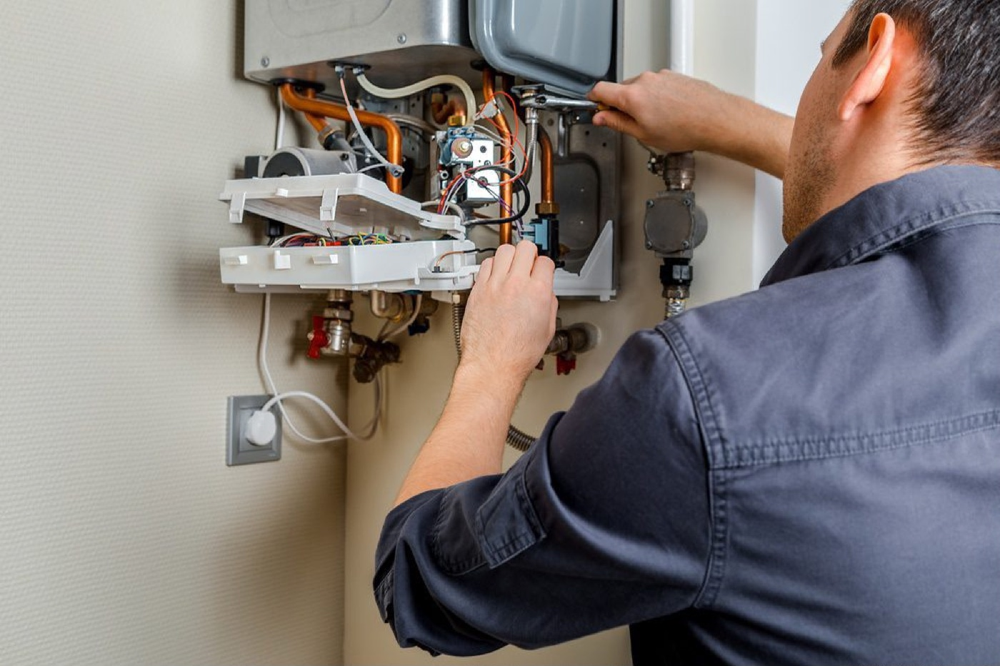
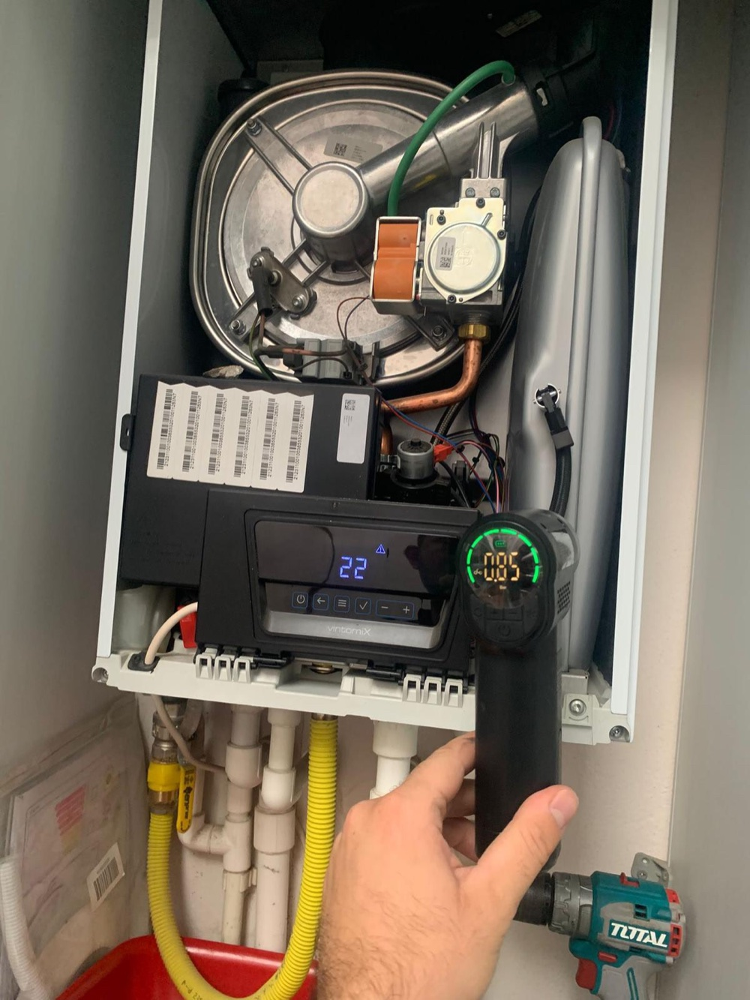
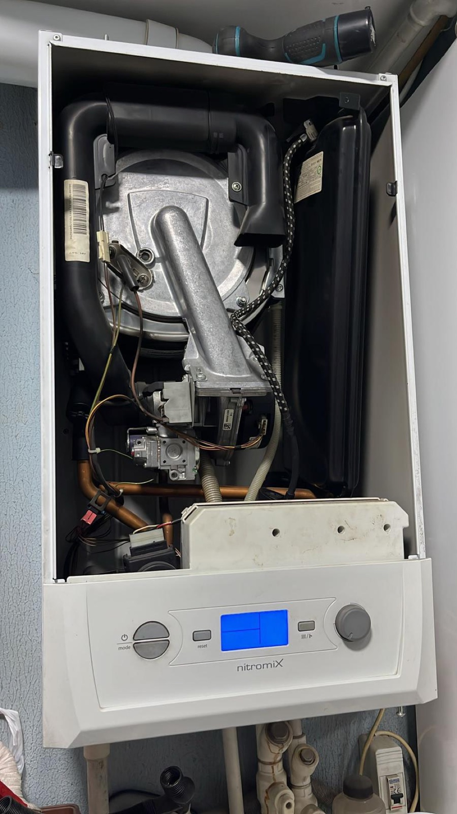
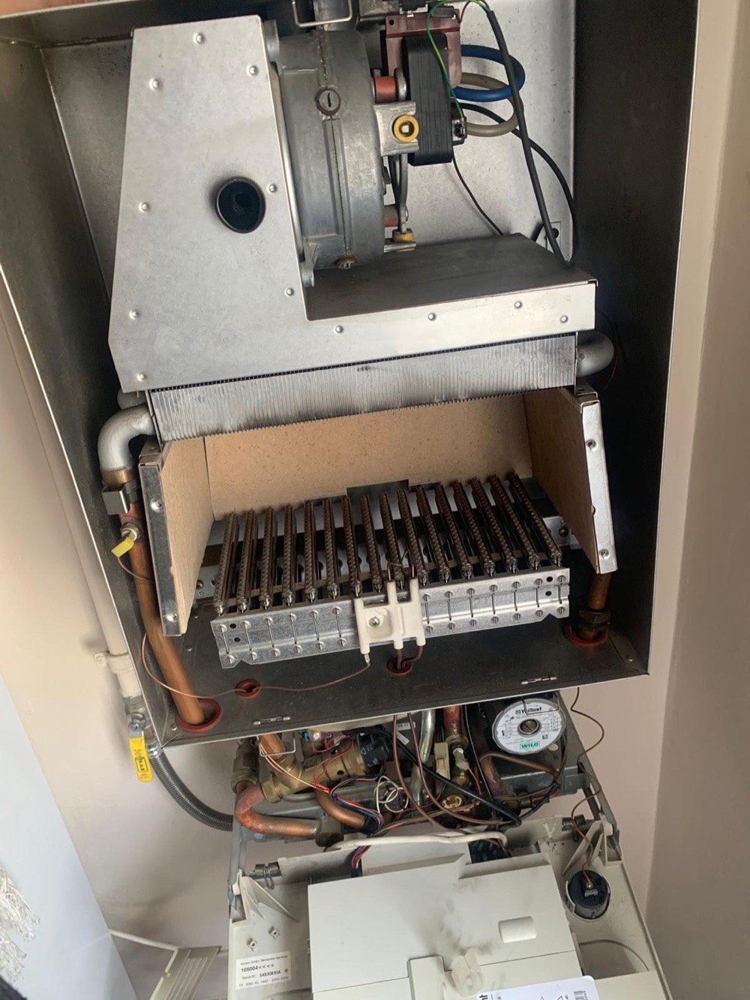
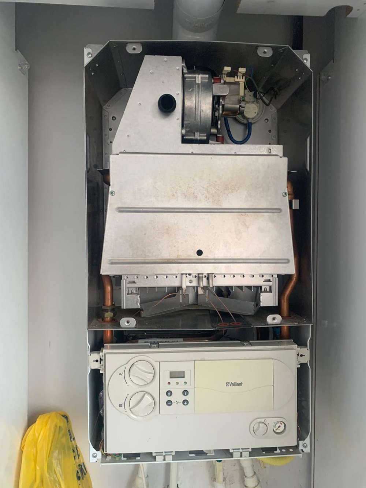
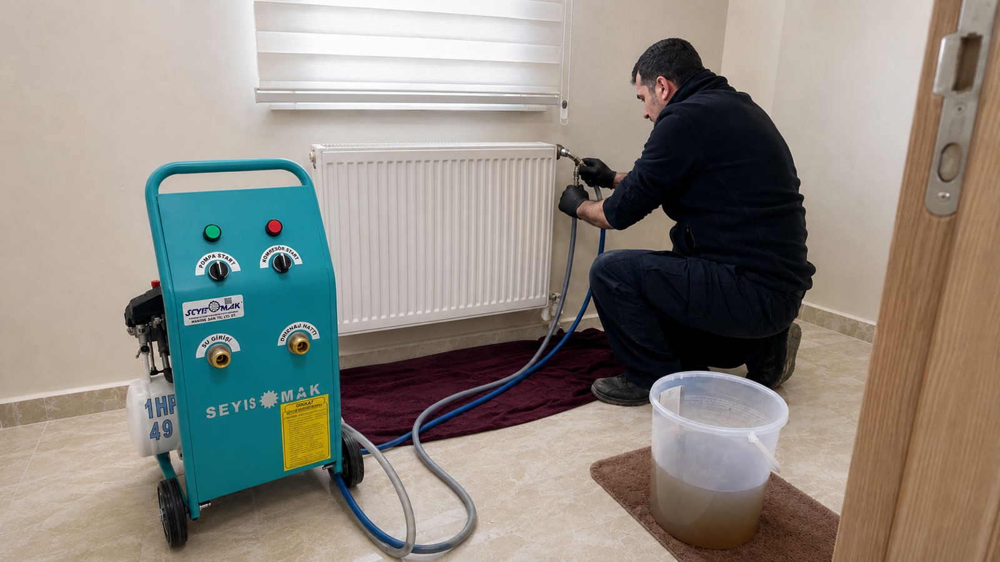

Kombi Tamiratı
Arıza tespiti yapılır, sorunlu parçalar belirlenerek güvenli ve kalıcı onarım sağlanır.
Vaillant, DemirDöküm, Baymak, E.C.A., Bosch, Buderus, Viessmann, Ariston, Ferroli, Protherm, Alarko ve Airfel dahil tüm marka ve model kombilerde bakım, tamirat, arıza tespiti, parça değişimi, kombi revizyonu ve petek temizliği.

Arıza tespitinden periyodik bakıma kadar her aşamada profesyonel destek sunuyoruz.
Arıza tespiti yapılır, sorunlu parçalar belirlenerek güvenli ve kalıcı onarım sağlanır.
Periyodik bakım ile kombinizin verimli, güvenli ve uzun ömürlü çalışması desteklenir.
Makineli petek temizliği ile geç ısınan peteklerin verimi artırılır.
Eskiyen veya performansı düşen kombilerde kapsamlı bakım ve revizyon uygulanır.
Uygun parçalarla hızlı değişim yapılarak ihtiyaca uygun çözümler sunulur.
Gece gündüz acil arıza durumlarında hızlı servis kaydı ve yönlendirme yapılır.
Uzman kadro ile profesyonel hizmet
Her gün, günün her saati yanınızdayız
Her marka kombiye uzman çözümler
Güvenilir ve özenli hizmet anlayışı
Talebiniz alındıktan sonra süreç hızlı ve düzenli şekilde planlanır.
Marka, model, arıza belirtisi ve bulunduğunuz ilçe telefon, WhatsApp veya form üzerinden alınır.
Talebiniz sisteme düşer ve ekibimiz tarafından takip edilir.
Uygun hizmet süreci, iletişim tercihinize göre hızlıca netleştirilir.
Durum güncellemeleri yönetilir, randevu ve tamamlanma süreci takip edilir.
Size en yakın ekibimizle hızlı, güvenilir ve kaliteli hizmet sunuyoruz.
Önde gelen markalar dahil her marka ve model kombiye profesyonel teknik hizmet sunuyoruz.
Ankara genelinde gerçekleştirdiğimiz kombi bakım ve teknik çalışmalarından fotoğraflar.





Formu doldurun, size en kısa sürede dönüş yapalım ve talebinizi alalım.
Kombi servis kaydınızı 7/24 oluşturabilir, aşağıdaki adresimizden bize ulaşabilirsiniz.